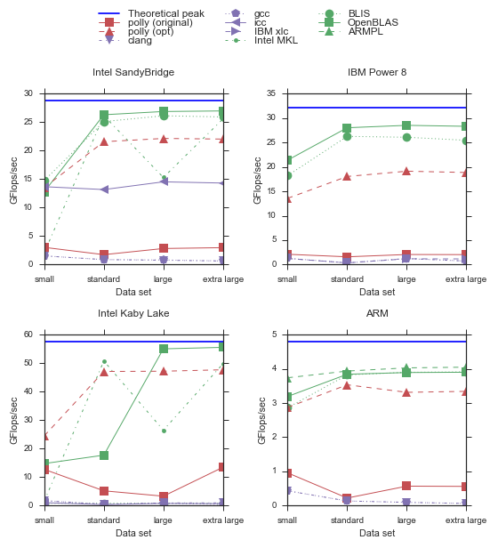

About Polly
Polly is a high-level loop and data-locality optimizer and optimization infrastructure for LLVM. It uses an abstract mathematical representation based on integer polyhedra to analyze and optimize the memory access pattern of a program. We currently perform classical loop transformations, especially tiling and loop fusion to improve data-locality. Polly can also exploit OpenMP level parallelism, expose SIMDization opportunities. Work has also be done in the area of automatic GPU code generation.
For many users, however, it's not the existing optimizations in Polly that are of most interest, but the new analyses and optimizations enabled by the Polly infrastructure. At polyhedral.info you can get an idea of what has already been done and what is possible in the context of polyhedral compilation.News
| 2017 | |
September |
High-Performance Generalized Matrix MultiplicationPolly automatically detects and optimizes generalized matrix multiplication, the computation C ← α ⊗ C ⊕ β ⊗ A ⊗ B, where A, B, and C are three appropriately sized matrices, ⊕ and ⊗ operations are originating from the corresponding matrix semiring, and α and β are constants, and beta is not equal to zero. It allows to obtain the highly optimized form structured similar to the expert implementation of GEMM that can be found in GotoBLAS and its successors.The performance evaluation of GEMM |
| 2017 | |
January |
IMPACT 2017 program announced. Join IMPACT 2017 on January 23rd in Stockholm @HiPEAC'17. |
| 2016 | |
August |
IMPACT 2017 the 7th International Workshop on Polyhedral Compilation Techniques will take place at January 23-25, 2017 together with HiPEAC 2017 in Stockholm, Sweden. It is a great opportunity to discuss and present work on Polyhedral Compilation, including work on Polly. |
April |
A source checkout that contains Polly now provides Polly functionality by default in clang/opt/bugpoint without the need to load an additional module. |
| 2015 | |
July |
AST Generation Paper published in TOPLASThe July issue of TOPLAS contains a 50 page discussion of the AST generation techniques used in Polly. This discussion gives not only an in-depth description of how we (re)generate an imperative AST from our polyhedral based mathematical program description, but also gives interesting insights about:
Tobias Grosser, Sven Verdoolaege, Albert Cohen ACM Transations on Programming Languages and Systems (TOPLAS), 37(4), July 2015 |
February |
Polly allows now non-affine subregionsData-dependent or floating point conditionals inside a SCoP can now be overapproximated in order to increase the applicability on general purpose code. |
| 2014 | |
August |
Polly drops the support of ScopLib and the external optimizer PoCCThe support for ScopLib as an exchange format has been removed as recent versions of clan, candl and pluto all support the OpenScop exchange format. The support of the external optmizer PoCC has been dropped in favor of the isl optimizer (default) and the still available pluto support. |
| 2014 | |
June |
Polly can be built without GPL licensed softwareAfter Sebastian Pop's and David Peixotto's (both Qualcomm) recent commit to isl, isl's latest development version can be built with imath instead of GMP. With both CLooG and gmp having become optional, the last obilgatory dependency to GPL licensed software has been removed. Now Polly only depends on isl (and the included imath), which are both MIT licensed. |
April |
Polly Phone Call - 23AprilWe had a polly phone call about delinearizing array accesses (II)Meeting notes are available online.Polly Phone Call - 17th AprilWe had a polly phone call about delinearizing array accesses Meeting notes are available online.Polly Phone Call - 10th AprilWe had a polly phone call. Meeting notes are available online.Polly Phone Call - 4th AprilWe had a polly phone call. Meeting notes are available online. |
March |
Static link Polly into toolsPolly can now be configured with 'cmake -D LINK_POLLY_INTO_TOOLS:Bool=ON' to be statically linked in the tools (opt, bugpoint, and clang.) This makes it easier to use polly without having to load a shared library, and it also reduces the complexity of compiling Polly on Windows. |
February |
Polly presentation at FOSDEM 2014Polly was presented at the FOSDEM LLVM developer's meeting.New LLVM test-suite buildbotsThe set of Polly buildbots has been extended. We now have 16 new blades that track correctness and performance when compiling the LLVM test-suite. For now five of them are used to provide fine granularity reports (almost per-commit) for 'clang -O3' (no polly). We also have six machines that track different configurations of polly. |
January |
islplot releasedislplot is a library that generates illustrations of integer sets and maps. It relies on isl to model the integer sets and uses the islpy Python bindings to access them. Plotting is performed with matplotlib. The following Examples show its use. |
| 2013 | |
November |
Loop optimization BoF at upcoming LLVM conferenceAt the upcoming LLVM conference there will be a loop optimization BoF discussing Polly and other high level loop optimizers. |
October |
Automatic code coverage and static analysis testsSylvestre Ledru set up automatic tests for code coverage and static analysis which run at least once a day and which include results for Polly.Move to CLooG 0.18.1 and isl 0.12.1With the move to an isl 0.12 version Polly can be compiled without the need to link directly to GMP (if isl is used for code generation). Currently isl is still internally using GMP, but private patches exist to also remove this dependency. Without the use of GMP, a GPL free version of Polly is possible. |
| 2012 | |
December |
New publication in the PPL JournalWe published a journal version of the Polly paper named Polly - Performing polyhedral optimizations on a low-level intermediate representation in the Parallel Processing Letters 2012. |
September |
Experimental support for the new isl code generatorThe code generator can be parameterized on a fine-grained level. It gives direct control for example over unrolling, the amount of control overhead and the code size. It can also be used to create loops to handle border conditions or to perform full-partial tile separation.We also relicensed isl under the MIT license. This means, with the exception of GMP (LGPL), there is no other (L)GPL licensed software used in Polly. The use of GMP is limited to a well defined interface. Replacing it with a BSD licensed replacement is a tractable engineering project we would be very interested in. For more information about isl see the isl manual. |
July |
Polly can now be directly linked to the Pluto optimizer. We were
already able to perform Pluto-like optimizations with Polly, as a similar
algorithm was added to isl half a year ago. However, being able to directly
compare with the original implementation will not only bring in competition in
the optimizer field. It will also allow new experiments with a cutting edge
research tool. |
February |
Polly is an official LLVM project, reachable at http://polly.llvm.org |
January |
Improved support for the isl scheduling optimizer Polly can now automatically optimize all polybench 2.0 kernels without the help of an external optimizer. The compile time is reasonable and we can show notable speedups for various kernels. |
2011 | |
November |
Talk at the LLVM Developer Meeting 2011 New SCEV parser(Allows parameters in array subscript and max/signextend) |
October |
Polly can use the isl schedule optimizer |
August |
|
July |
Polly builder as part of the LLVM Buildbots |
June |
Tobias is founded for three years by a Google Europe Fellowship in Efficient Computing. |
May |
Tobias' diploma thesis and Raghesh's master thesis. See our list of publications. |
April |
Polly moves to the LLVM infrastructure (svn, bugtracker) |
March |
Presentation at CGO/IMPACT Polly can compile polybench 2.0 with vectorization and OpenMP code generation |
Februar |
pollycc - a script to automatically compile with polyhedral optimizations |
Januar |
Basic OpenMP support, Alias analysis integration, Pluto/POCC support |
2010 | |
Dezember |
Basic vectorization support |
November |
Talk at the LLVM Developer Meeting |
October |
Dependency analysis Finished Phase 1 - Get something working Support scalar dependences and sequential SCoPs |
August |
RegionInfo pass committed to LLVM llvm-test suite compiles |
July |
Code generation works for normal SCoPs. |
May |
The CLooG AST can be parsed. |
April |
SCoPs can automatically be detected. |
March |
The RegionInfo framework is almost completed. |
February |
Translate a simple loop to Polly-IR and regenerate a loop structure with CLooG works. ISL and CLooG are integrated. |
January |
The RegionInfo pass is finished. |
2009 | |
End of the year |
Work on the infrastructure started. |